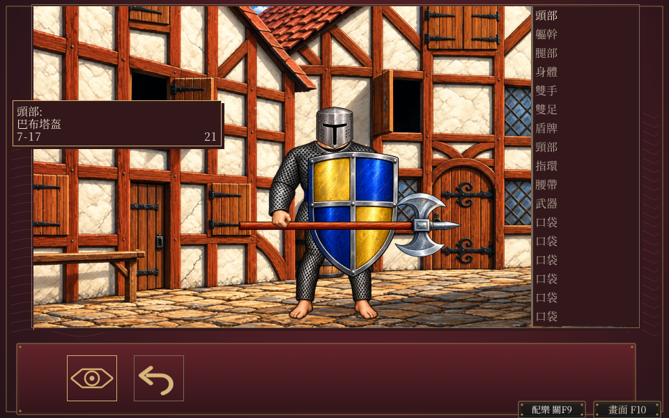
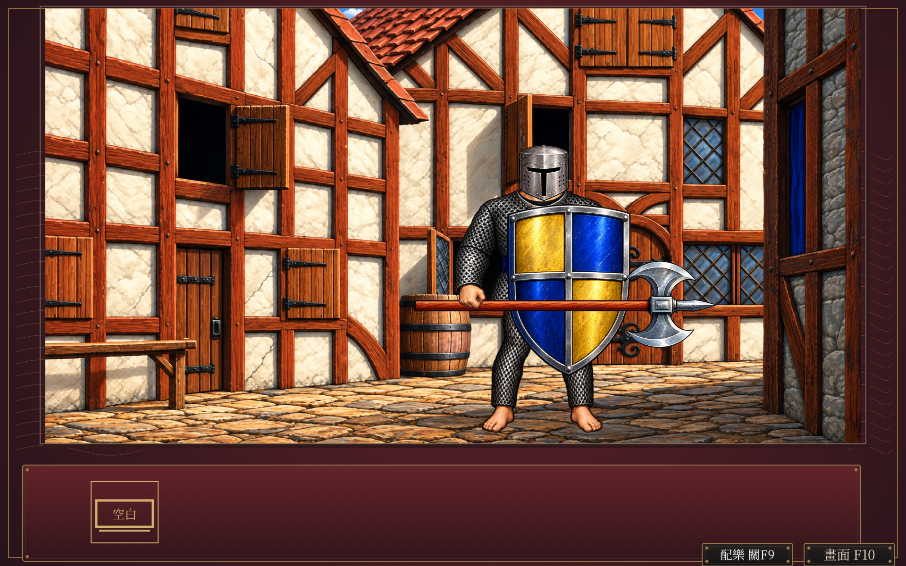
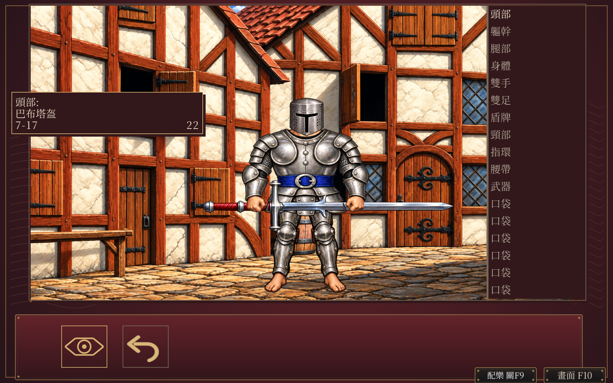
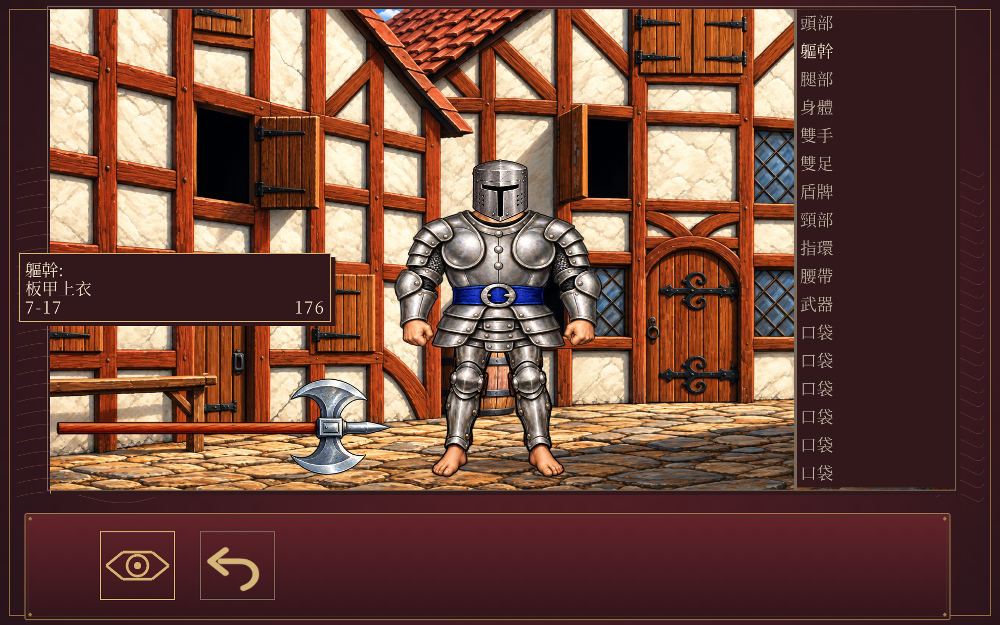
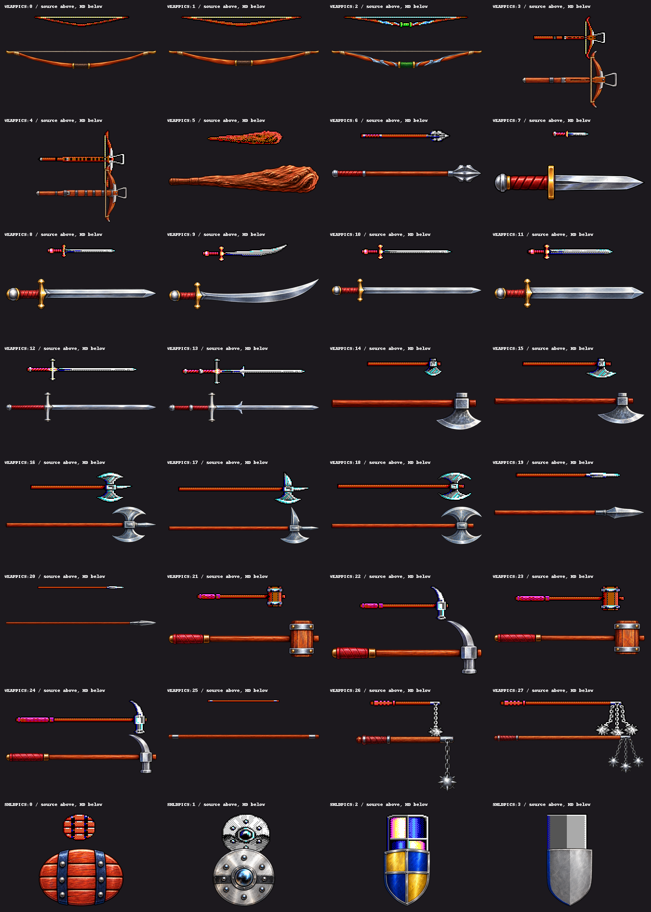

武器與盾牌 HD 原型
隔離原型，尚未接入正式版。28款武器及4盾圖集已接入人類男性物品／隊伍頁；其他五種體型續作。比較沿同一程式、同一角色狀態，原型不是原版DOS對拍。
範圍 · 驗證收據 · 生成與來源 · 前版原型
Kenneth戰斧與盾
實際視窗，使用遊戲內F10。
960×600實際視窗

Kenneth隊伍頁
實際視窗，使用遊戲內F10。

960×600實際視窗
Sharakan雙手劍
實際視窗，使用遊戲內F10。

Jax腰帶戰斧
正常控制器擷取。

六組鍵鼠往返、36個設定事件，完整Inn與隊伍狀態保持，完整HD畫格最多一色階。雙手劍保留兩隻手且不畫盾，腰帶武器沿原位置。
28款武器與4盾來源比較
圖集對照，並非32種正常遊玩驗收。

正式v3保存重載、其他體型及正式載入契約仍待完成。PNG僅依目前private儲存庫例外保存，未取得公開散布權。